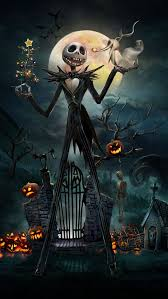

Jack Skellington is the main character in Tim Burton's The Nightmare before Christmas. He is known as the "Pumpkin King" of Halloween Town. Jack is a tall skeletal figure with a passion for creating the best Halloween celebrations. However, he gets tired of the same old routine and decides he wants to take over Christmas. Despite his good intentions, Jack's attempt to bring Christmas to Halloween Town leads to chaos.
Key Achievements
As the Pumpkin King, Jack is renowned for orchestrating
Halloween Town's annual celebration. His creativity, leadership,
and dedication have set the standard for what Halloween should be,
earning him the admiration and respect of everyone in town.
Contributions
Jack's major contribution is the discovery and attempted takeover
of Christmas Town. The takeover doesn't go very smoothly but it
showcases Jack's strong ambition and unmatched creativity.
Challenges
Jack faced several challenges with the takeover of Christmas Town.
First, he misinterprets the spirit of christmas which leads him to
recreate it in a very creepy way. Secondly, he faced resistance from
the Halloween Town residents, and additionally, Jack faced internal
conflict because he was failing to create the feeling of joy he felt
when he first discovered Christmas Town.